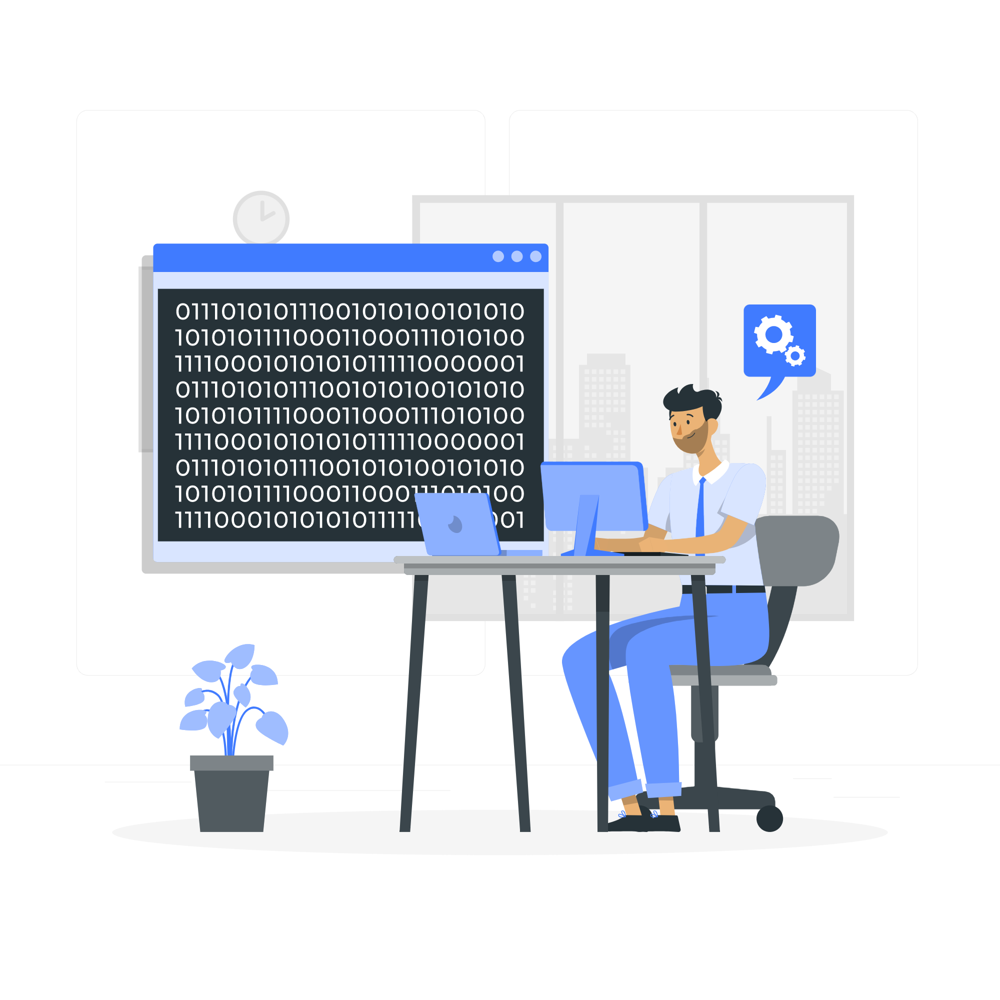
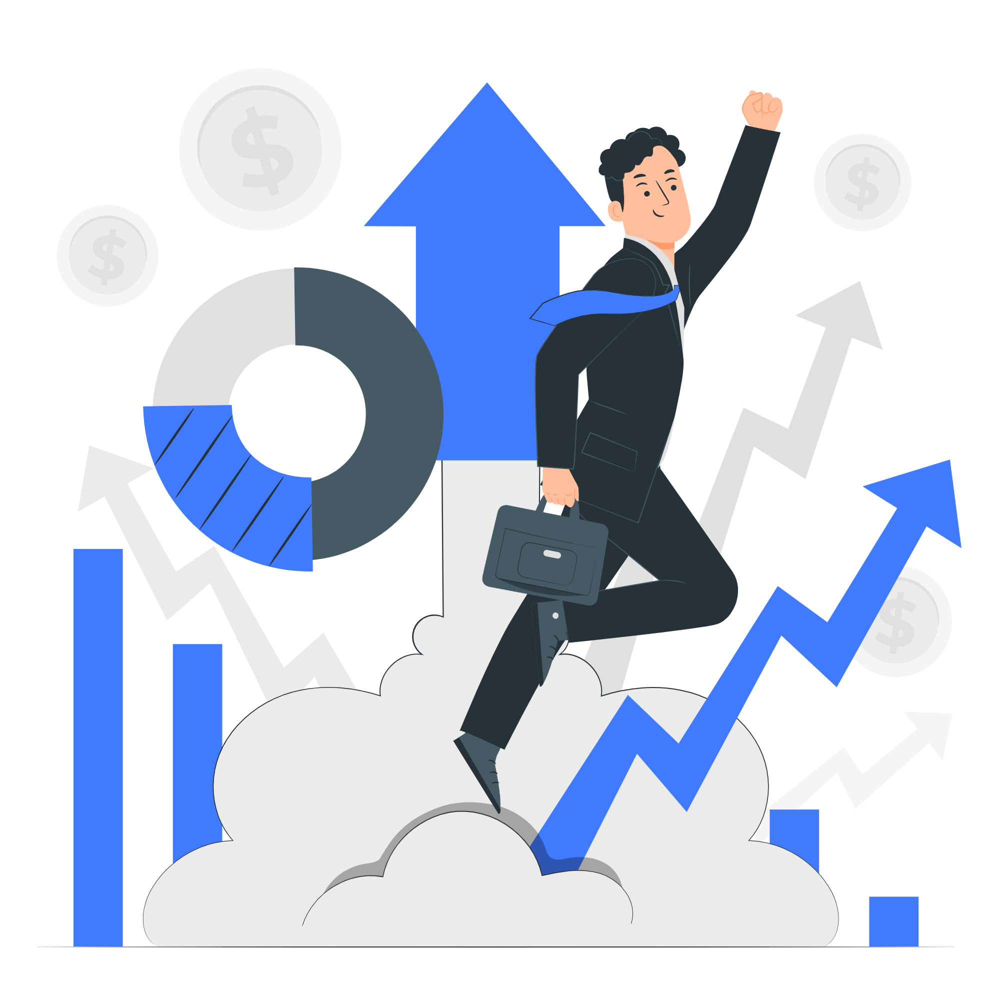

AI-Assisted Systems
Designing practical AI-supported workflows for planning, operations, content, research, and technical decision support.
AI • Automation • Digital Systems
Karamix Labs builds practical software systems, AI-assisted workflows, automation-inspired platforms, and modern digital interfaces designed to help businesses operate smarter, faster, and with more clarity.

Company
Karamix Labs is a modern technology studio focused on AI-assisted systems, automation-inspired software, business platforms, web interfaces, and scalable digital products.
The studio combines industrial automation thinking, software engineering, AI-assisted workflows, and modern interface design to build systems with structure, purpose, and long-term utility.
Karamix Labs focuses on useful, scalable digital systems rather than simple visual websites only: dashboards, request lifecycles, admin control, workflow tools, and product foundations that can grow.
The company is currently founder-led and product-focused, building its public foundation while developing practical platforms and future AI-assisted tools.
Services
Focused services for companies that need clear interfaces, structured operations, intelligent workflows, and scalable digital foundations.
Designing practical AI-supported workflows for planning, operations, content, research, and technical decision support.
Applying control-system thinking to software flows, monitoring views, process logic, and operational interfaces.
Building structured admin environments for users, requests, reporting, verification, support, and operations.
Creating premium, responsive websites and web platforms that communicate clearly and support product growth.
Designing mobile-first interface concepts for Android and iOS products with clean flows and practical app logic.
Developing internal tools that organize teams, requests, approvals, notifications, and repeatable business tasks.
Products
Karamix Labs is building a company foundation around practical software products, operational dashboards, and future AI-assisted tools.
Digital Platform
In DevelopmentA digital platform project focused on mining-cycle logic, dashboards, referral systems, user operations, verification, withdrawals, support, and admin control.
Company Presence
Live FoundationThe official company presence and brand foundation for Karamix Labs.
AI Tools
Research DirectionPlanned AI-assisted tools for productivity, technical workflows, and business operations.
Technologies
Karamix Labs builds around a practical mix of frontend interfaces, backend concepts, AI-assisted workflows, automation foundations, and product system design.

Digital Systems
Visual direction for the kinds of systems Karamix Labs designs: operational dashboards, automation-style monitoring, and mobile product interfaces.
Business Dashboard
Dashboards that expose status, users, requests, reporting, and business activity through clear interface structure.
Automation Logic
Software flows influenced by industrial systems, process visibility, monitoring concepts, and control logic.
Product Interfaces
Modern interfaces for customer portals, internal tools, app concepts, and product experiences across screens.
Founder
AbdulKarim Haj Yasin
Founder & Systems Developer
Karamix Labs was founded by AbdulKarim Haj Yasin, an industrial automation and control engineer building toward AI-assisted software systems, automation-inspired platforms, business dashboards, and modern digital products.
Contact
Contact Karamix Labs to discuss websites, dashboards, AI-assisted workflows, automation-inspired platforms, or custom digital products.